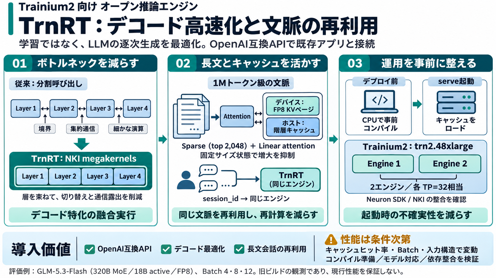

Serving GLM-5.3-Flash on one Trainium2 box with NKI layer megakernels | RunAnywhere
Hardware: one AWS trn2.48xlarge, 16 Trainium2 chips, running two serving instances, each tensor-parallel across 32 logic…

推論（inference）最適化
学習ではなく、文章生成のデコードを速くする発想。
OpenAI互換
chat/completions中心で、base_url経由で呼び出し可能。
Kernel boundaries
層ごとに分割されると切り替えコストが増える。
Collectives
並列化に伴う集約が逐次性と衝突する。
Small ops
命令量が細かいほど効率が落ちやすい。
層×回数
カーネル切替と集約の粒度が細かい。
束ねて一気に
境界・集約露出を減らして逐次を緩和。
Sparse（top 2,048）
全結合ではなく上位のみ参照。
Linear attention
長さに対して扱いを軽くする方向。
Fixed-size
状態サイズを制御して増大を抑える。
FP8 KVページ
キャッシュをFP8単位で保持。
階層キャッシュ
追い出し後もホストに残して再利用。
Cache Hit率UP
同一prefixを同一エンジンで回す。
分散は敵
別エンジンへ飛ぶほど再計算が増える可能性。
Graph生成・コンパイル
CPUホストでcompile cacheを作成。
ロードして提供
通常はコンパイルを走らせない。
Trainium2: trn2.48xlarge
GPUではなくtrn2で推論。
2 Engines / TP=32相当
論理NeuronCoresでテンソル並列。
GLM-5.3-Flash
320B MoE / 18B active / FP8 / 1M context。
Batch（4/8/12）
decode batchで速度・待ちを確認。
Cache hit条件
cached inputの有無で待ちが変わる。
Batch / Prompt
decode batchや入力形で効き方が変わる。
Neuron依存
Neuron SDKバージョン等の整合が必要。
i 実装しやすい移行
OpenAI互換で既存クライアントが使える。
ii デコード律速を攻める
megakernelsと集約露出の抑制。
iii 長文再利用
FP8 KVページ＋階層cache＋session。
i 作成コスト
compile cacheの時間・コスト。
ii 対応範囲
現在はGLM-5.3-Flash中心の可能性。
iii 再現性
ベンチ条件差で性能が変わり得る。
session_id
同一prefixを固定し、キャッシュ効果を最大化。
キャッシュ条件
cached inputの有無、ウォームアップ、同時実行。
Hardware: one AWS trn2.48xlarge, 16 Trainium2 chips, running two serving instances, each tensor-parallel across 32 logic…
1 point by sanchitmonga2257 minutes ago | hide | past | favorite | discuss Hi HN, Sanchit here from RunAnywhere (YC W26)…
Hybrid architecture efficiency: Combines sparse attention and linear attention to reduce attention computation by 3.01x …
Public Preview The NKI Library provides an open source collection of optimized, ready-to-use kernels for common ML oper…
Can we convert FP8 to INT8 with good accuracy? Since there are some benefits to using the FP8 data format for training,…